Portal
Versión: 2.2.0
Fecha de liberación: 13/1/17
Descripción:
El componente Portal constituye el punto de entrada de las aplicaciones del Marco de trabajo Zeolides(MT). Consume servicios de otros componentes del MT para garantizar la seguridad y brinda servicios para lograr la integración de los subsistemas.
Compuesto por:
- Zeolides 2.3.0
- Persona 1.0.3
- Quarseg 2.3.0
- Ayuda 3.0.0
Desarrollado por:
Ayuda del componente Portal
Para acceder a los componentes horizontales, el desarrollador debe introducir la dirección URL del mismo, en el navegador web (Mozilla Firefox) y oprimir la tecla “Enter” del teclado, ver Figura 1.
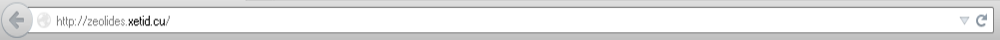
Figura 1. Se introduce la dirección URL del sistema.
Realizada la acción anterior el sistema muestra la ventana de autenticación requerida solicitando los datos de identificación, ver Figura 2.
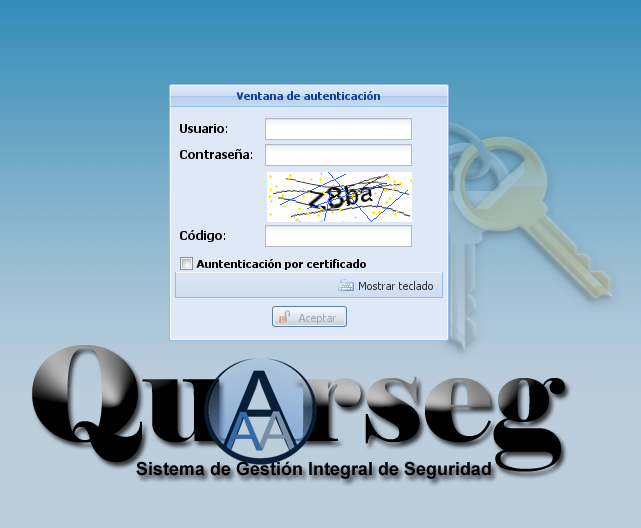
Figura 2. Ventana de autenticación.
Existen dos modos de autenticación el primero que requiere usuario, contraseña y código, y el segundo que se activa al dar click en el campo Autenticación por certificado desactiva los campos usuario y contraseña, y aparecen dos nuevos campos: PKCS#12 para seleccionar desde el sistema de archivos del sistema el certificado de usuario y el campo Frase secreta para introducir la frase secreta del certificado de usuario, ver Figura 3.
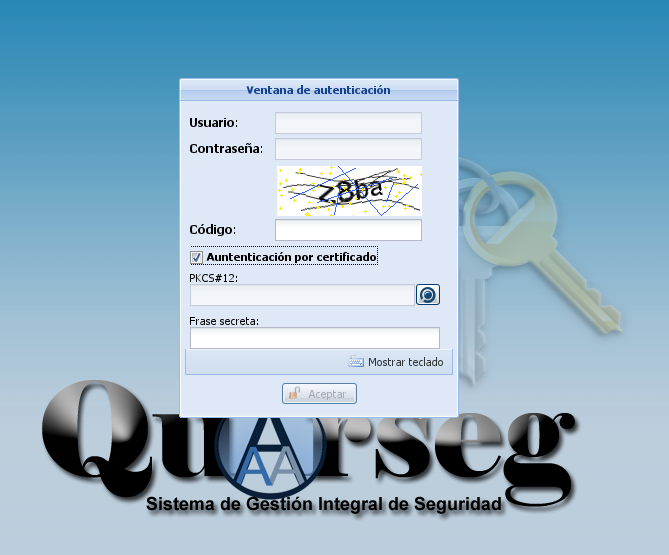
Figura 3. Ventana de autenticación (Autenticación por certificado)
Se introducen los datos requeridos en el método de autenticación deseado como que se muestran en las imagenes. Luego se selecciona la opción Aceptar para comprobar que los datos introducidos sean correctos. A continuación se muestra la siguiente interfaz, ver Figura 4.
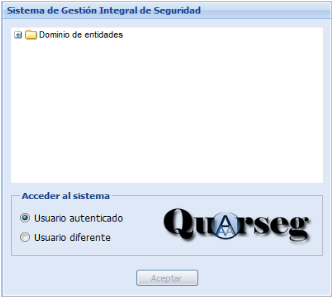
Figura 4. Interfaz de selección de entidades.
Se selecciona la estructura de la institución a la cual tiene permisos el usuario autenticado y se presiona la opción Aceptar. Seguidamente se muestra la interfaz principal del sistema, ver Figura 5.
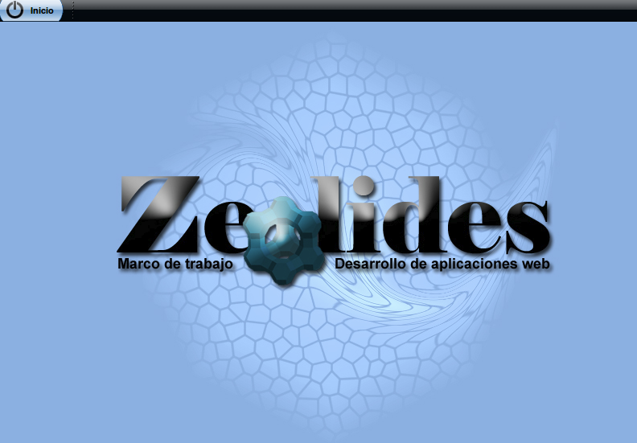
Figura 5. Interfaz principal del sistema.
Interacción Usuario-Sistema
Portal del sistema
Este componente permite mostrar el portal principal de los subsistemas a desplegar en instalaciones clientes, posibilitando cambiar contraseña, cambiar de entidad, acceder al jabber, mostrar el menú y mostrar la imagen de fondo. Para acceder a la interfaz principal basta con realizar la autenticación requerida, explicada anteriormente y se observará el portal como interfaz inicial. El portal del sistema está dividido en dos áreas, las cuales se describen a continuación, ver Figura 6.

Figura 6. Portal del sistema.
Área 1: Muestra la imagen de fondo del sistema.
Área 2: Contiene el menú de opciones del sistema conformado por los permisos del usuario en la entidad accedida. Las opciones del menú se describen a continuación, ver Figura 7.

Figura 7. Menú de opciones del sistema.
Las opciones de la figura anterior permiten:
- Mostrar el usuario que se ha autenticado en el sistema.
- Mostrar el tema que está siendo usado por el usuario.
- Mostrar la imagen del usuario que se encuentra conectado en el sistema.
- Modificar los datos del inicio de sesión permitiendo acceder a otra estructura.
- Ver la ayuda detallada del portal.
- Cambiar la contraseña del usuario que está accediendo al sistema, se muestra la interfaz correspondiente para realizar esta operación.
- Asociar un certificado de usuario valido al usuario autenticado en el sistema.
- Configurar la apariencia del portal del sistema.
- Salir del sistema.
- Mostrar el listado de los subsistemas a los que tiene acceso el usuario de acuerdo a los permisos asignados.
Menú
Para personalizar la apariencia del menú se selecciona click secundario sobre el elemento, ver Figura 8, si el elemento es un subsitema se permitirá cambiar el ícono del mismo, si es una funcionalidad, además de cambiar el ícono se podrá crear un acceso directo y visualizar la información del sistema al que pertenece, ver Figura 9.
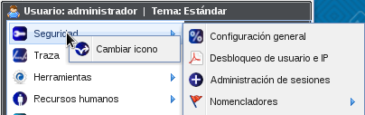
Figura 8. Personalizar ícono del menú.
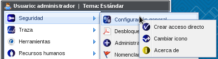
Figura 9. Menú para las funcionalidades.
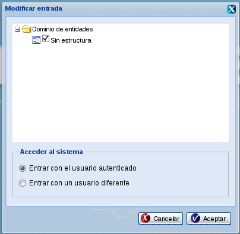
Luego, en el listado de entidades a las que el usuario autenticado tiene permiso, se selecciona a la que se quiere cambiar, finalmente se activa y se presiona el botón Aceptar.
Cambio de contraseña
En la interfaz principal del portal, se presiona el botón Inicio en la esquina superior izquierda y en el menú que se despliega se observa la opción Contraseña. Al presionarla aparece en pantalla la interfaz Cambiar contraseña, ver Figura 11.

Figura 11. Interfaz para cambiar la contraseña.
En el formulario se introducen los campos:
- Contraseña anterior: Clave actual que tiene el usuario y que desea cambiar.
- Nueva contraseña: Clave nueva que desea tener.
- Confirmar nueva contraseña: Confirmación de la clave nueva que desea tener.
De ser presionado el botón Aceptar aparece el mensaje de éxito: “La contraseña ha sido cambiada satisfactoriamente.” y se cierra la interfaz. Para abortar la operación se presiona el botón Cancelar.
Cambio de contraseña
En la interfaz principal del portal, se presiona el botón Inicio en la esquina superior izquierda y en el menú que se despliega se observa la opción Asociar certificado. Al presionarla aparece en pantalla la interfaz Asociar certificado a usuario, ver Figura 12.

Figura 12. Interfaz para certificado al usuario autenticado.
En el formulario se introducen los campos:
- PKCS#12: Certificado de usuario en formato pkcs12.
- Frase secreta: Frase secreta del certificado de usuario agregado anteriormente.
De ser presionado el botón Aceptar aparece el mensaje de éxito: “El certificado a sido asociado satisfactoriamente.” y se cierra la interfaz. Para abortar la operación se presiona el botón Cancelar.
Ayuda
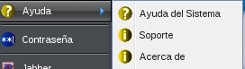
Figura 13:Menú de ayuda del portal
La ayuda del menú muestra las opciones:
Ayuda del Sistema: Esta mostrará una interfaz con información sobre el uso del portal
Soporte: La opción soporte servirá para reportar algun error en el sistema, ver Figura 14.
Acerca de: Muestra la información básica del subsistema portal, ver Figura 15.
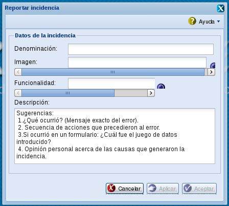
Figura 14: Interfaz para realizar reporte de error en el sistema.
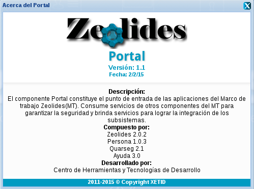
Figura 15:Información del subsistema portal.
Apariencia
Al presionar la opción Apariencia del menú se mostrará la interfaz de la Figura 16 del índice Apariencia.
Para gestionar la apariencia del portal se debe presionar clic secundario sobre el área de trabajo y se mostrara la opción Apariencia, ver Figura 16. 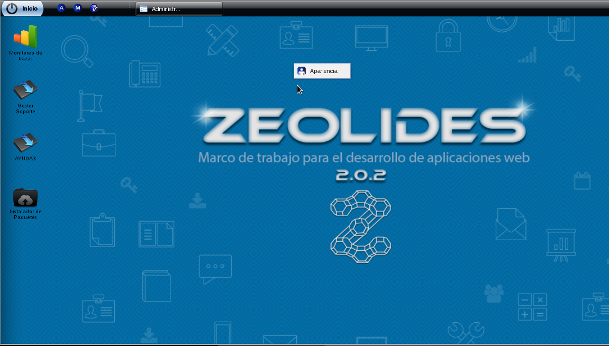
Figura 16: Gestionar apariencia en el portal.
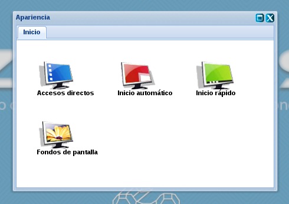
Figura 17: Interfaz de gestión de la apariencia.
Luego de presionado se mostrara la interfaz para gestionar un grupo de aspectos propios de la apariencia, ver Figura 17, estos son:
- Accesos directos.
- Inicios rápidos.
- Inicios automáticos.
- Fondos de pantalla.
Accesos directos
Los Accesos directos permitirán a los usuarios acceder a las funcionalidades del sistema a las cuales tenga permiso con presionar solo un clic sobre el escritorio donde se encotrará al botón para acceder, sin tener que buscarlo al menu de sistemas y funcionalidades.
Para crearlo se presiona la opción Accesos directos de la Figura 17, el cual mostrara un panel con el listado de las funcionalidades a las que tiene acceso el usuario, ver Figura 18 en el cual se puede seleccionar la funcionalidad o funcionalidades a las cuales se le quiere crear el acceso directo, ademas el panel contará con un buscador para el caso de que existan muchas funcionalidades, el usuario podrá teclear el nombre o alguna palabra que este dentro del nombre de la funcionalidad.
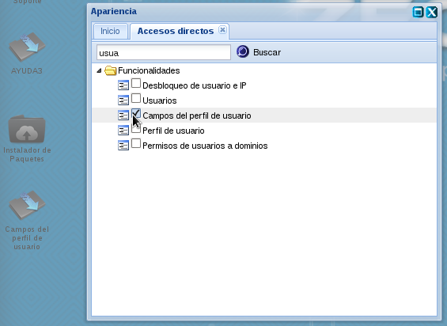
Figura 18: Panel para la creación de accesos directos.
Luego de seleccionada la funcionalidad se creará el acceso en el escritorio del marco de trabajo.Este elemento podrá ser personalizado al presionar el botón secundario mostrando un menú de opciones como se muestra en la Figura 19.
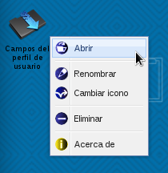
Figura 19: Elemento que se crea para acceder a la funcionalidad.
Menú de opciones para los accesos directos:
Abrir: Permite abrir la funcionalidad, esto tambien lo hace presionando doble clic sobre el elemento.
Renombrar: Permite cambiar el campo de texto del acceso directo, ver Figura 20.
Cambiar icono: Permite asignar un icono representativo de la funcionalidad, ver Figura 21.
Eliminar: Elimina el elemento del escritorio y de la apariencia del usuario.
Acerca de: Muestra la información básica del sistema al que pertenece la funcionalidad, ver Figura 22.
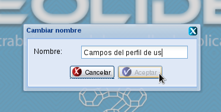
Figura 20: Interfaz para cambiar el nombre del acceso directo.

Figura 21:Interfaz para cambiar el ícono del acceso directo.
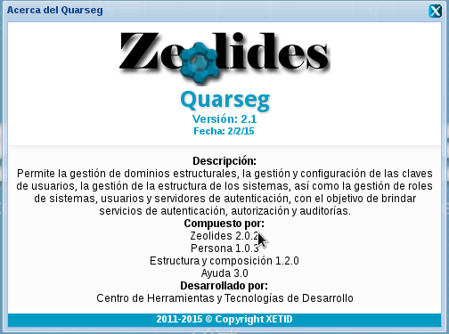
Figura 22:Información del sistema al que pertenece la funcionalidad.
Inicios rápidos
Los inicios rápidos permiten a los usuarios acceder a las funcionalidades mediante un botón que se crea en la barra de tarea , junto al menú inicio.
Para crearlo se presiona la opción Inicio rápido de la Figura 17, el cual mostrará un panel con el listado de las funcionalidades a las que tiene acceso el usuario, ver Figura 23, en el cual se puede seleccionar la funcionalidad o funcionalidades a las cuales se le quiere crear el inicio rápido, además el panel contará con un buscador para el caso de que existan muchas funcionalidades, el usuario podrá teclear el nombre o alguna palabra que esté dentro del nombre de la funcionalidad.
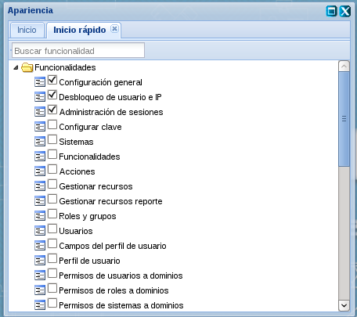
Figura 23: Panel de funcionalidades para crear inicios rápidos.
Luego de seleccionada la funcionalidad se creará el inicio en la barra de tareas del marco de trabajo.Este elemento podrá ser personalizado al presionar el botón secundario mostrando un menú de opciones como se muestra en la Figura 24.
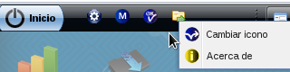
Figura 24:Elemento que se crea en la barra de tareas luego de seleccionar una funcionalidad.
La opción Cambiar icono ofrece un grupo de imágenes y permite asignarle una al inicio rápido seleccionando la misma, ver Figura 25.
Acerca de: Muestra la información básica del sistema al que pertenece la funcionalidad, ver Figura 22 .
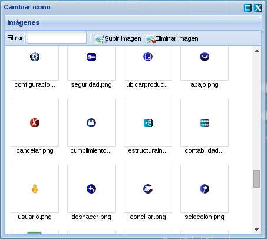
Figura 25:Ventana para seleccionar un ícono para el inicio rápido.
Inicios automáticos
Los inicios automáticos permiten abrir las funcionalidades automáticamente con el inicio del marco trabajo, esta funcionalidad es similar a las aplicaciones al inicio de algunos sistemas operativos.
Para crearlo se presiona la opción Inicio automático de la Figura 17, el cual mostrará un panel con el listado de las funcionalidades a las que tiene acceso el usuario, ver Figura 26, en el cual se puede seleccionar la funcionalidad o funcionalidades a las cuales se le quiere crear el acceso directo, además el panel contará con un buscador para el caso de que existan muchas funcionalidades, el usuario podrá teclear el nombre o alguna palabra que está dentro del nombre de la funcionalidad.
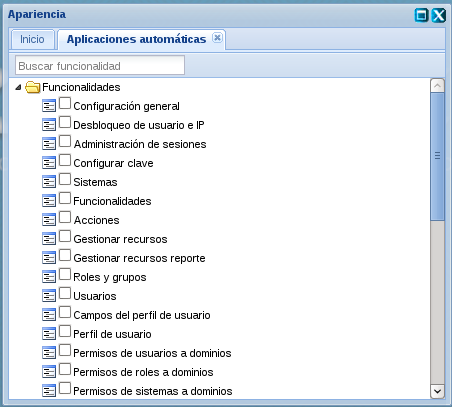
Figura 26: Panel para crear aplicaciones automáticas.
Luego de seleccionada la funcionalidad se mostrará una interfaz para escojer el modo en que va a iniciar la misma, estos pueden ser minimizado y maximizado , si se cierra la ventana esta saldrá automáticamente minimizado, ver Figura 27.
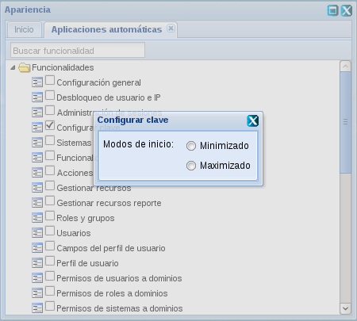
Figura 27:Interfaz para seleccionar el modo de inicio.
Fondos de pantalla
Esta opción permite seleccionar una imagen y establecerla de fondo de escritorio del marco de trabajo.
Para ralizar esta operación se presiona la opción Fondos de pantalla de la Figura 17, el cual mostrará un panel con un grupo de imágenes disponibles para establecer el fondo, ver Figura 28.
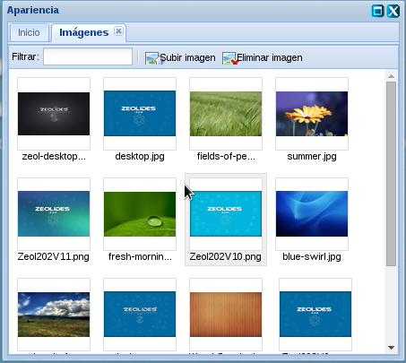
Figura 28: Panel con las imágenes para fondo de pantalla.
El panel también cuenta con la opción subir imagen y eliminar imagen, para el caso de que la imagen que se desee establecer no se encuentre entre las opciones.
Para establecerlo se presiona doble clic sobre la imagen deseada y la operación será realizada.
Notificaciones
La bandeja de notificaciones permite informar a los usuarios de eventos ocurridos en el sistema, en la figura se muestra como esta presente la bandeja de notificaciones en el marco de trabajo.
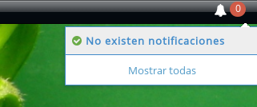
Figura 29: Bandeja de notificaciones.
Como se muestra en la figura se encontrará en la parte superior derecha del escritorio del marco de trabajo, representado por un ícono en la barra de tareas el cual indicará el número de notificaciones presentes en el momento, además se sentirá el sonido de aviso de llegada de una notificación para detener el sonido se presiona doble clic sobre la campana, ver Figura 30.
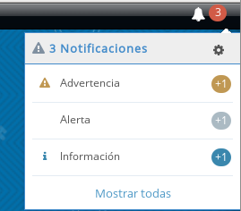
Figura 30: Bandeja de notificaciones con una Advertencia, alerta e información.
Para ver detalles de la notificación se presiona doble clic sobre la misma mostrándose un panel con la información, ver Figura 31.
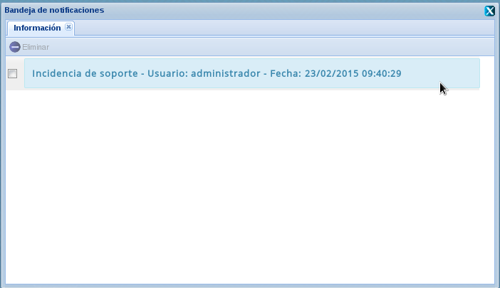
Figura 31: Información de la notificación.
Además se puede seleccionar ver todas las notificaciones, ver Figura 32.
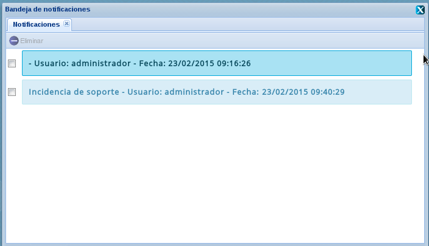
Para marcarla como leída se selecciona sobre la notificación y el estilo de la misma cambiará indicando que la misma cambió de estado.
Para realizar la gestión de los avisos dirigirse a la ayuda de Alertas y avisos.
Videos tutoriales
Notificaciones
Cambiar íconos a los elementos del menú inicio
Crear acceso directo desde el menú inicio
Propiedades de acceso directo
Crear acceso desde el escritorio
Crear aplicaciones automática
Crear inicios rápidos
Cambiar fondo de escritorio